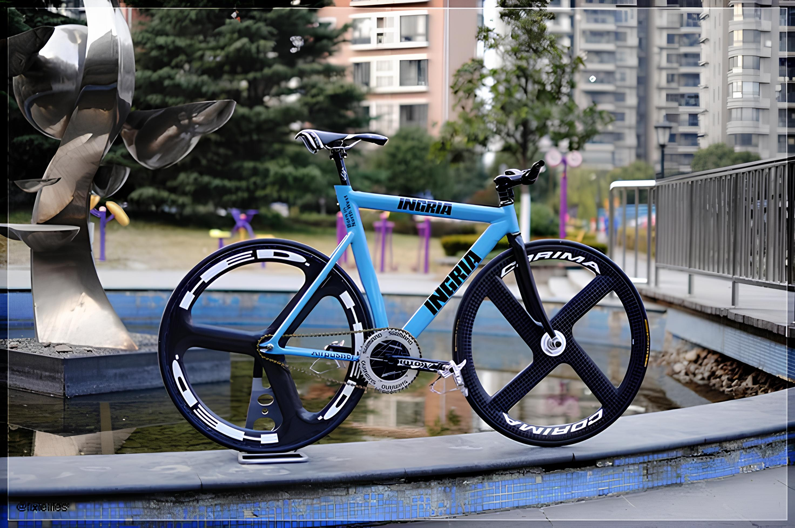
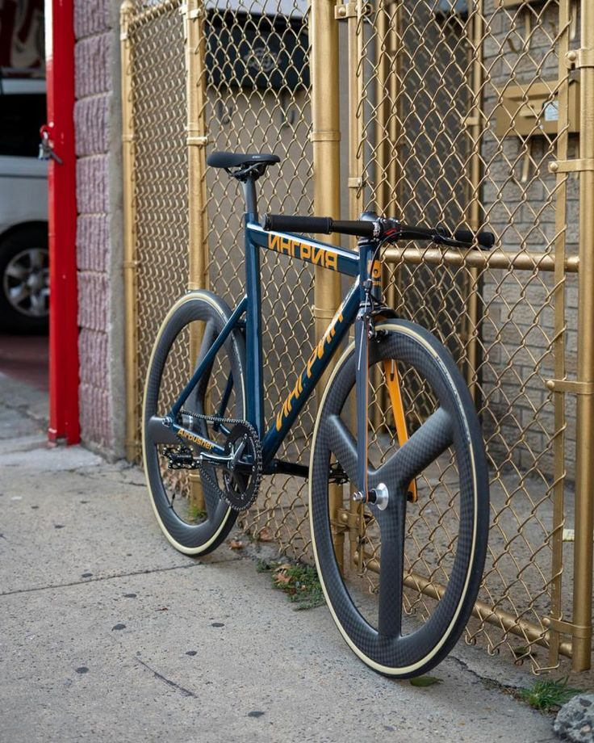
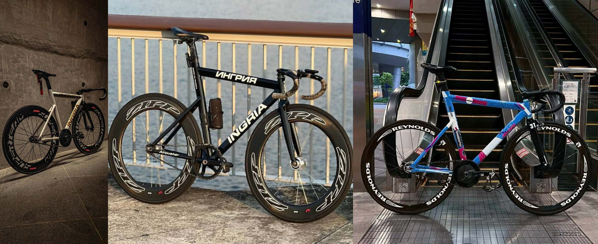
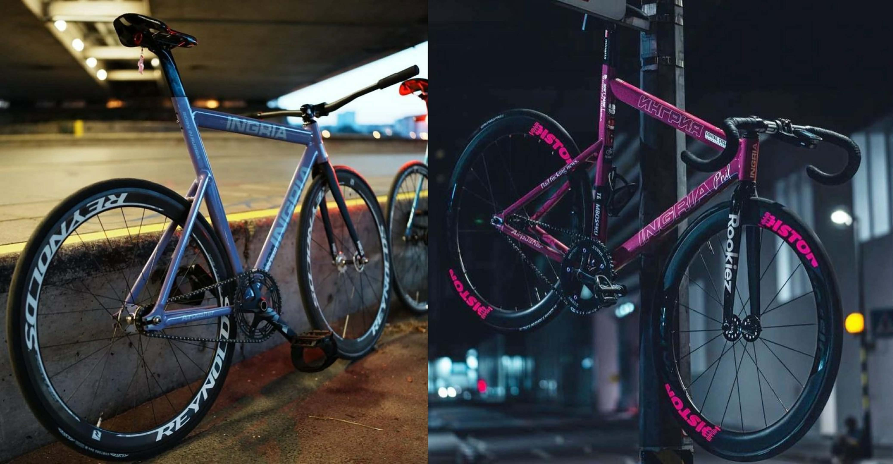

The Ingria Airpusher is a fixed-gear track frame designed with a strong focus on speed, stiffness, and aggressive riding performance. Originating from Russia, it reflects traditional velodrome geometry while being adapted for urban street use. One of its most defining characteristics is its compact and aggressive geometry, featuring a short wheelbase that allows for quick acceleration and highly responsive handling, though it may feel less stable at slower speeds. The frame also exhibits noticeable toe overlap, a common trait in track bikes, where the rider’s foot can come into contact with the front wheel during tight turns. In addition, the Airpusher uses steep frame angles and a low front end, with a short head tube that places the rider in a more aerodynamic, forward-leaning position, improving efficiency but reducing comfort on longer rides.

A fixed-gear bike, often called a “fixie,” is a type of bicycle that has a drivetrain with no freewheel mechanism, meaning the pedals are directly connected to the motion of the rear wheel. Unlike standard bicycles, where the rider can coast without pedaling, on a fixed-gear bike the pedals continue to move whenever the bike is in motion. This direct connection gives the rider a unique sense of control and feedback from the road, allowing for precise speed adjustments, efficient pedaling, and even braking using leg resistance. Fixed-gear bikes are simple in design, often having fewer components than geared bicycles, which makes them lighter, easier to maintain, and visually minimalistic.
Fixed-gear bicycles are popular both on the track and in urban environments due to their responsiveness and simplicity. On velodromes, riders use fixed-gear bikes for racing because the direct drive allows for maximum power transfer and precise handling at high speeds. In cities, fixies are appreciated for their low maintenance, reliability, and the skillful riding style they encourage, including techniques like skidding and controlling speed through pedal resistance. However, riding a fixed-gear bike requires practice and attention, as it demands constant pedaling and careful handling, especially at low speeds or during sudden stops. Overall, fixed-gear bikes offer a unique combination of efficiency, simplicity, and connection between the rider and the road, appealing to both performance-focused cyclists and enthusiasts of minimalist bike culture.

If you want a bike that's simple, fast, and brutally responsive, a fixed-gear is the way to go, and the Ingria Airpusher takes it to the next level. Its aggressive geometry, stiff frame, and precise handling make it perfect for riders who love speed, control, and mastering their every pedal stroke. Unlike ordinary bikes, it’s built to transfer every ounce of power directly to the wheels, handle skids and sprints, and stand up to street or track abuse—making it not just a bike, but a statement in performance and style.
The Ingria Airpusher frame has some serious pros: it’s ultra stiff, so every pedal stroke hits the road; aggressive geometry for insane handling and quick sprints; short wheelbase makes it super responsive; reinforced joints and gussets for durability during skids and hard riding; and a high bottom bracket that gives excellent corner clearance. Basically, it’s built for speed, control, and abuse.
📧 For orders and inquiries, reach out to us via email: